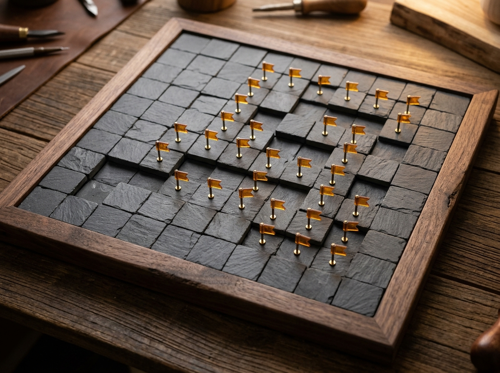

정통 전략 지뢰찾기 첫 클릭 안전 구역 보장 주변 동시 열기 지원
숫자의 단서로 지뢰밭을 해독하는 정교한 논리 퍼즐
운에 기대는 첫 클릭 폭발 없이 항상 안전한 개방 구역에서 출발합니다. 열린 숫자를 클릭해 주변 칸을 단번에 여는 코드 열기(Chording)와 키보드·터치 단축 조작으로 쾌적하게 최고 기록에 도전해 보세요.
입문 및 워밍업에 적합한 클래식 규격

전략 지뢰찾기 보드
핵심 조작 요약
초급 최고 기록 (9×9)
기록 없음
클리어 0회 · 도전 0회
중급 최고 기록 (16×16)
기록 없음
클리어 0회 · 도전 0회
고급 최고 기록 (30×16)
기록 없음
클리어 0회 · 도전 0회
전체 승률 및 최다 연승
0%
총 0게임 · 최고 0연승
게임이 일시정지되었습니다
공정한 기록 측정을 위해 일시정지 중에는 보드가 가려집니다.
모든 지뢰 해체 완료!
00.0초
0 / 71
-
0.00 /s
개인 명예의 전당 · 브라우저 자동 저장
난이도별 최고 기록 및 통계
플레이 횟수
0회
클리어 횟수
0회
달성 승률
0%
현재 / 최고 연승
0 / 0연승
아직 초급 난이도 클리어 기록이 없습니다
지뢰가 없는 모든 안전한 칸을 열면 클리어 시간과 초당 보드 효율(3BV/s)이 이곳에 자동으로 기록됩니다.
| 순위 | 클리어 시간 | 보드 기준치 (3BV) | 초당 효율 (3BV/s) | 클리어 방식 | 달성일 |
|---|
규칙 안내 · 고급 탐색 기술 · 키보드 및 터치 조작법
마인스위퍼 플레이 가이드
01. 숫자의 의미 파악하기
열린 칸에 적힌 숫자는 해당 칸을 둘러싼 주변 8칸(상·하·좌·우·대각선) 안에 숨겨진 지뢰의 총 개수입니다. 숫자가 없는 빈 칸은 주변에 지뢰가 0개라는 뜻이며, 인접한 안전한 영역이 연쇄적으로 함께 열립니다.
02. 깃발 표시와 소거법
숫자와 닫힌 칸의 개수를 비교해 지뢰가 확실한 칸에는 우클릭(또는 길게 터치)으로 깃발을 꽂으세요. 깃발이 꽂힌 칸은 실수로 클릭해도 열리지 않도록 안전하게 잠금 보호됩니다.
03. 주변 동시 열기 (Chording)
이미 열린 숫자 칸 주변에 그 숫자만큼의 깃발을 모두 꽂았다면, 해당 숫자 칸을 한 번 클릭해 보세요. 나머지 닫혀 있는 주변 안전 칸들이 단번에 열려 탐색 속도를 비약적으로 단축할 수 있습니다.
실전 핵심 패턴 두 가지
복잡해 보이는 보드도 아래의 기본 논리 패턴으로 대부분 해독할 수 있습니다.
모서리 확정 법칙
모서리에 맞닿은 숫자 1 주변에 닫힌 칸이 단 한 칸뿐이라면 그 칸은 100% 지뢰입니다. 깃발을 꽂은 뒤 인접한 다른 1을 클릭하면 나머지 칸을 즉시 안전하게 열 수 있습니다.
직선 벽면 1 - 2 - 1 공식
닫힌 벽면을 따라 1 - 2 - 1이 나란히 나타나면, 가운데 2 바로 위 칸은 절대 지뢰가 될 수 없으며 양쪽의 1 바로 위 두 칸이 항상 지뢰가 됩니다.
마우스 · 키보드 · 터치 조작 일람
| 동작 | 마우스 조작 | 키보드 단축키 | 모바일 / 터치 |
|---|---|---|---|
| 타일 열기 | 닫힌 칸 좌클릭 | 방향키 이동 후 Space / Enter | 열기 모드에서 가볍게 탭 |
| 깃발 표시 / 해제 | 닫힌 칸 우클릭 | F 키 | 길게 누르기 (0.3초) 또는 깃발 모드 탭 |
| 주변 동시 열기 | 열린 숫자 칸 좌클릭 또는 더블클릭 | 숫자 칸 위에서 Space / Enter | 열린 숫자 칸 탭 |
| 빠른 재시작 / 일시정지 | 상단 상태 버튼 클릭 | R (재시작) · P (일시정지) | 상단 툴바 버튼 탭 |